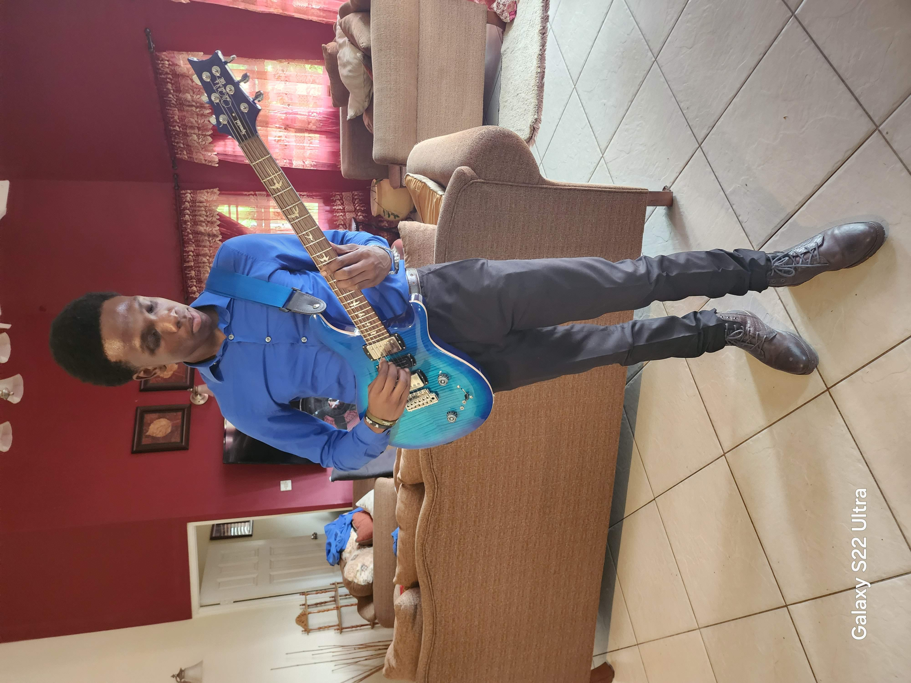

Welcome to My Music Journey

Welcome to my musical world, where creativity, passion, and rhythm come together. My name is Jahred Domnique and I am a guitarist with a deep love for music and a passion for expressing myself through the strings of a guitar.
Music has always been more than just sound to me. It is a way to tell stories, connect with people, and create unforgettable experiences. Whether I am performing live, practicing new techniques, or exploring different musical styles, my goal is always to grow as a musician and share my love for music with the world.
Explore my journey, discover my music, and experience the sound of my guitar.